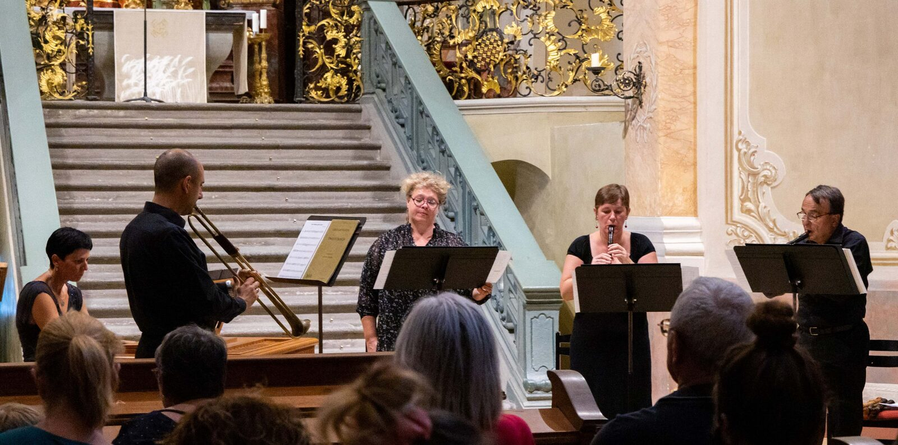

Prezentare formație artistică
Ansamblu de muzică veche din Cluj-Napoca
Cu instrumente de epocă și practică interpretativă autentică

Activitate documentată prin CD-uri, transmisii radio, filmări TV și peste 500 de concerte, cu turnee în Austria, Spania, Italia, Franța, Israel, Elveția și alte țări europene. Toți membrii sunt absolvenți ai Academiei de Muzică „Gheorghe Dima" din Cluj-Napoca.
Flaut drept·Flaut drept·Clavecin
Trio instrumental
Variantă extinsă: + soprană, percuție
Peste două decenii de activitate concertistică, documentată prin înregistrări, turnee internaționale și colaborări europene.
Peste 500 de concerte; turnee în Austria, Argentina, Spania, Italia, Franța, Israel, Elveția, Germania, Slovenia, Serbia, Slovacia și Ungaria
Activitate documentată prin CD-uri, transmisii radio și filmări TV
Program Cultura al Uniunii Europene; proiect UNESCO „Cultural Heritage – a Bridge towards a Shared Future"; invitați speciali la The 5th International Early Music Seminar, Tel Aviv (2014)
Absolvenți ai Academiei de Muzică „Gheorghe Dima" din Cluj-Napoca, cu perfecționare la cursuri de măiestrie în străinătate